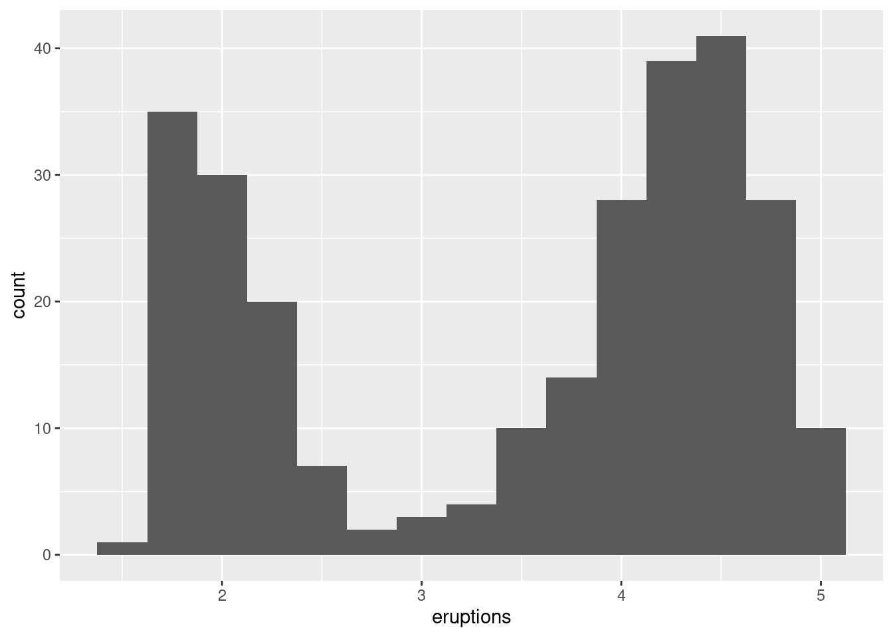

9.2 Exploratory Data Analysis
Exploratory Data Analysis (EDA) is not a formal process with a strict set of rules. More than anything, EDA is a state of mind. During the initial phases of EDA you should feel free to investigate every idea that occurs to you. Some of these ideas will pan out, and some will be dead ends. As your exploration continues, you will home in on a few particularly productive areas that you’ll eventually write up and communicate to others.
EDA is an important part of any data analysis, even if the questions are handed to you on a platter, because you always need to investigate the quality of your data. Data cleaning is just one step in the EDA process: you ask questions about whether your data meets your expectations or not. To do data cleaning, you’ll need to deploy all the tools of EDA: visualization, transformation, and modelling.
Your goal during EDA is to develop an understanding of your data. The easiest way to do this is to use questions as tools to guide your investigation. When you ask a question, the question focuses your attention on a specific part of your dataset and helps you decide which graphs, models, or transformations to make.
EDA is fundamentally a creative process. And like most creative processes, the key to asking quality questions is to generate a large quantity of questions. It is difficult to ask revealing questions at the start of your analysis because you do not know what insights are contained in your dataset. On the other hand, each new question that you ask will expose you to a new aspect of your data and increase your chance of making a discovery. You can quickly drill down into the most interesting parts of your data—and develop a set of thought-provoking questions—if you follow up each question with a new question based on what you find.
There is no rule about which questions you should ask to guide your research. However, two types of questions will always be useful for making discoveries within your data. You can loosely word these questions as:
What type of variation occurs within my variables?
What type of covariation occurs between my variables?
The rest of this class will look at these two questions. We’ll explain what variation and covariation are, and we’ll show you several ways to answer each question.
9.2.1 Some terminology
To make the discussion easier, let’s define some terms:
A variable is a quantity, quality, or property that you can measure.
A value is the state of a variable when you measure it. The value of a variable may change from measurement to measurement.
An observation is a set of measurements made under similar conditions (you usually make all of the measurements in an observation at the same time and on the same object). An observation will contain several values, each associated with a different variable. I’ll sometimes refer to an observation as a data point.
Tabular data is a set of values, each associated with a variable and an observation. Tabular data is tidy if each value is placed in its own “cell,” each variable in its own column, and each observation in its own row.
So far, all of the data that you’ve seen has been tidy. In real-life, most data isn’t tidy,
9.2.2 Variation
Variation is the tendency of the values of a variable to change from measurement to measurement. You can see variation easily in real life; if you measure any continuous variable twice, you will get two different results. This is true even if you measure quantities that are constant, like the speed of light. Each of your measurements will include a small amount of error that varies from measurement to measurement.
Categorical variables can also vary if you measure across different subjects (e.g. the eye colors of different people), or different times (e.g. the energy levels of an electron at different moments). Every variable has its own pattern of variation, which can reveal interesting information. The best way to understand that pattern is to visualize the distribution of the variable’s values.
9.2.2.1 Visualising distributions - Discrete case
How you visualize the distribution of a variable will depend on whether the variable is categorical or continuous. A variable is categorical if it can only take one of a small set of values. In R, categorical variables are usually saved as factors or character vectors. To examine the distribution of a categorical variable, use a bar chart:
library(ggplot2)
ggplot(data = diamonds) +
geom_bar(mapping = aes(x = cut))
barplot(table(diamonds$cut))The height of the bars displays how many observations occurred with each x value. You can compute these values manually with dplyr::count():
library(dplyr)
diamonds %>%
count(cut)## # A tibble: 5 × 2
## cut n
## <ord> <int>
## 1 Fair 1610
## 2 Good 4906
## 3 Very Good 12082
## 4 Premium 13791
## 5 Ideal 21551table(diamonds$cut)##
## Fair Good Very Good Premium Ideal
## 1610 4906 12082 13791 215519.2.2.2 Visualising distributions - Continuous case
A variable is continuous if it can take any of an infinite set of ordered values. Numbers and date-times are two examples of continuous variables. To examine the distribution of a continuous variable, use a histogram:
ggplot(data = diamonds) +
geom_histogram(mapping = aes(x = carat), binwidth = 0.5)hist(diamonds$carat)
A histogram divides the x-axis into equally spaced bins and then uses the height of a bar to display the number of observations that fall in each bin. In the graph above, the tallest bar shows that almost 30,000 observations have a carat value between 0.25 and 0.75, which are the left and right edges of the bar.
You can set the width of the intervals in a histogram with the binwidth argument, which is measured in the units of the x variable. You should always explore a variety of binwidths when working with histograms, as different binwidths can reveal different patterns. For example, here is how the graph above looks when we zoom into just the diamonds with a size of less than three carats and choose a smaller binwidth.
smaller <- diamonds %>%
filter(carat < 3)
ggplot(data = smaller, mapping = aes(x = carat)) +
geom_histogram(binwidth = 0.1)smaller <- subset(diamonds, diamonds$carat < 3)
hist(smaller$carat,breaks = 20)If you wish to overlay multiple histograms in the same plot, I recommend using geom_freqpoly() instead of geom_histogram(). geom_freqpoly() performs the same calculation as geom_histogram(), but it uses lines instead of displaying the counts with bars. It’s much easier to understand overlapping lines than bars.
ggplot(data = smaller, mapping = aes(x = carat, colour = cut)) +
geom_freqpoly(binwidth = 0.1)The function density can be used for the same purpose in standard R.
Now that you can visualize variation, what should you look for in your plots? And what type of follow-up questions should you ask? I’ve put together a list below of the most useful types of information that you will find in your graphs, along with some follow-up questions for each type of information. The key to asking good follow-up questions will be to rely on your curiosity (What do you want to learn more about?) as well as your skepticism (How could this be misleading?).
In both bar charts and histograms, tall bars show the common values of a variable, and shorter bars show less-common values. Places that do not have bars reveal values that were not seen in your data. To turn this information into useful questions, look for anything unexpected:
Which values are the most common? Why?
Which values are rare? Why? Does that match your expectations?
Can you see any unusual patterns? What might explain them?
As an example, the histogram below suggests several interesting questions:
Why are there more diamonds at whole carats and common fractions of carats?
Why are there more diamonds slightly to the right of each peak than there are slightly to the left of each peak?
Why are there no diamonds bigger than 3 carats?
ggplot(data = smaller, mapping = aes(x = carat)) +
geom_histogram(binwidth = 0.01)Clusters of similar values suggest that subgroups exist in your data. To understand the subgroups, ask:
How are the observations within each cluster similar to each other?
How are the observations in separate clusters different from each other?
How can you explain or describe the clusters?
The histogram below shows the length (in minutes) of 272 eruptions of the Old Faithful Geyser in Yellowstone National Park. Eruption times appear to be clustered into two groups: there are short eruptions (of around 2 minutes) and long eruptions (4-5 minutes), but little in between.
ggplot(data = faithful, mapping = aes(x = eruptions)) +
geom_histogram(binwidth = 0.25)
Many of the questions above will prompt you to explore a relationship between variables, for example, to see if the values of one variable can explain the behavior of another variable. We’ll get to that shortly.
Outliers are observations that are unusual; data points that don’t seem to fit the pattern. Sometimes outliers are data entry errors; other times outliers suggest important new science. When you have a lot of data, outliers are sometimes difficult to see in a histogram. For example, take the distribution of the y variable from the diamonds dataset. The only evidence of outliers is the unusually wide limits on the x-axis.
ggplot(diamonds) +
geom_histogram(mapping = aes(x = y), binwidth = 0.5)There are so many observations in the common bins that the rare bins are so short that you can’t see them (although maybe if you stare intently at 0 you’ll spot something). To make it easy to see the unusual values, we need to zoom to small values of the y-axis with coord_cartesian():
ggplot(diamonds) +
geom_histogram(mapping = aes(x = y), binwidth = 0.5) +
coord_cartesian(ylim = c(0, 50))
hist(diamonds$y, ylim=c(0,50))This allows us to see that there are three unusual values: 0, ~30, and ~60. We pluck them out with dplyr:
unusual <- diamonds %>%
filter(y < 3 | y > 20) %>%
select(price, x, y, z) %>%
arrange(y)
unusual## # A tibble: 9 × 4
## price x y z
## <int> <dbl> <dbl> <dbl>
## 1 5139 0 0 0
## 2 6381 0 0 0
## 3 12800 0 0 0
## 4 15686 0 0 0
## 5 18034 0 0 0
## 6 2130 0 0 0
## 7 2130 0 0 0
## 8 2075 5.15 31.8 5.12
## 9 12210 8.09 58.9 8.06unusual <- subset(diamonds, y < 3 | y > 20)
unusual <- cbind(unusual$price,unusual$x, unusual$y, unusual$z)
unusual## [,1] [,2] [,3] [,4]
## [1,] 5139 0.00 0.0 0.00
## [2,] 6381 0.00 0.0 0.00
## [3,] 12210 8.09 58.9 8.06
## [4,] 12800 0.00 0.0 0.00
## [5,] 15686 0.00 0.0 0.00
## [6,] 18034 0.00 0.0 0.00
## [7,] 2075 5.15 31.8 5.12
## [8,] 2130 0.00 0.0 0.00
## [9,] 2130 0.00 0.0 0.00The y variable measures one of the three dimensions of these diamonds, in mm. We know that diamonds can’t have a width of 0mm, so these values must be incorrect. We might also suspect that measurements of 32mm and 59mm are implausible: those diamonds are over an inch long, but don’t cost hundreds of thousands of dollars!
It’s good practice to repeat your analysis with and without the outliers. If they have minimal effect on the results, and you can’t figure out why they’re there, it’s reasonable to replace them with missing values, and move on. However, if they have a substantial effect on your results, you shouldn’t drop them without justification. You’ll need to figure out what caused them (e.g. a data entry error) and disclose that you removed them in your write-up.
If you’ve encountered unusual values in your dataset, and simply want to move on to the rest of your analysis, you have two options.
- Drop the entire row with the strange values:
diamonds2 <- diamonds %>%
filter(between(y, 3, 20))diamonds2 <- subset(diamonds, y>= 3 & y<=20)I don’t recommend this option because just because one measurement is invalid, doesn’t mean all the measurements are. Additionally, if you have low quality data, by time that you’ve applied this approach to every variable you might find that you don’t have any data left!
- Instead, I recommend replacing the unusual values with missing values. The easiest way to do this is to use
mutate()to replace the variable with a modified copy. You can use theifelse()function to replace unusual values withNA:
diamonds2 <- diamonds %>%
mutate(y = ifelse(y < 3 | y > 20, NA, y))diamonds2$y2 = ifelse(diamonds$y < 3 | diamonds$y > 20, NA, diamonds$y)ifelse() has three arguments. The first argument test should be a logical vector. The result will contain the value of the second argument, yes, when test is TRUE, and the value of the third argument, no, when it is false.
Like R, ggplot2 subscribes to the philosophy that missing values should never silently go missing. It’s not obvious where you should plot missing values, so ggplot2 doesn’t include them in the plot, but it does warn that they’ve been removed:
ggplot(data = diamonds2, mapping = aes(x = x, y = y)) +
geom_point()## Warning: Removed 9 rows containing missing values (geom_point).To suppress that warning, set na.rm = TRUE:
ggplot(data = diamonds2, mapping = aes(x = x, y = y)) +
geom_point(na.rm = TRUE)
Other times you want to understand what makes observations with missing values different to observations with recorded values. For example, in nycflights13::flights, missing values in the dep_time variable indicate that the flight was cancelled. So you might want to compare the scheduled departure times for cancelled and non-cancelled times. You can do this by making a new variable with is.na().
nycflights13::flights %>%
mutate(
cancelled = is.na(dep_time),
sched_hour = sched_dep_time %/% 100,
sched_min = sched_dep_time %% 100,
sched_dep_time = sched_hour + sched_min / 60
) %>%
ggplot(mapping = aes(sched_dep_time)) +
geom_freqpoly(mapping = aes(colour = cancelled), binwidth = 1/4)However this plot isn’t great because there are many more non-cancelled flights than cancelled flights.
9.2.3 Covariation
If variation describes the behavior within a variable, covariation describes the behavior between variables. Covariation is the tendency for the values of two or more variables to vary together in a related way. The best way to spot covariation is to visualise the relationship between two or more variables. How you do that should again depend on the type of variables involved.
9.2.3.1 A categorical and continuous variable
It’s common to explore the distribution of a continuous variable broken down by a categorical variable, as in the previous frequency polygon. The default appearance of geom_freqpoly() is not that useful for that sort of comparison because the height is given by the count. That means if one of the groups is much smaller than the others, it’s hard to see the differences in shape. For example, let’s explore how the price of a diamond varies with its quality:
ggplot(data = diamonds, mapping = aes(x = price)) +
geom_freqpoly(mapping = aes(colour = cut), binwidth = 500)
It’s hard to see the difference in distribution because the overall counts differ so much:
ggplot(diamonds) +
geom_bar(mapping = aes(x = cut))
To make the comparison easier we need to swap what is displayed on the y-axis. Instead of displaying count, we’ll display density, which is the count standardised so that the area under each frequency polygon is one.
ggplot(data = diamonds, mapping = aes(x = price, y = ..density..)) +
geom_freqpoly(mapping = aes(colour = cut), binwidth = 500)There’s something rather surprising about this plot - it appears that fair diamonds (the lowest quality) have the highest average price! But maybe that’s because frequency polygons are a little hard to interpret - there’s a lot going on in this plot.
Another alternative to display the distribution of a continuous variable broken down by a categorical variable is the boxplot. A boxplot is a type of visual shorthand for a distribution of values that is popular among statisticians. Each boxplot consists of:
A box that stretches from the 25th percentile of the distribution to the 75th percentile, a distance known as the interquartile range (IQR). In the middle of the box is a line that displays the median, i.e. 50th percentile, of the distribution. These three lines give you a sense of the spread of the distribution and whether or not the distribution is symmetric about the median or skewed to one side.
Visual points that display observations that fall more than 1.5 times the IQR from either edge of the box. These outlying points are unusual so are plotted individually.
A line (or whisker) that extends from each end of the box and goes to the farthest non-outlier point in the distribution.
9.2.3.2 A categorical and continuous variable
Let’s take a look at the distribution of price by cut using geom_boxplot():
ggplot(data = diamonds, mapping = aes(x = cut, y = price)) +
geom_boxplot()We see much less information about the distribution, but the boxplots are much more compact so we can more easily compare them (and fit more on one plot). It supports the counterintuitive finding that better quality diamonds are cheaper on average!
cut is an ordered factor: fair is worse than good, which is worse than very good and so on. Many categorical variables don’t have such an intrinsic order, so you might want to reorder them to make a more informative display. One way to do that is with the reorder() function.
For example, take the class variable in the mpg dataset. You might be interested to know how highway mileage varies across classes:
ggplot(data = mpg, mapping = aes(x = class, y = hwy)) +
geom_boxplot()To make the trend easier to see, we can reorder class based on the median value of hwy:
ggplot(data = mpg) +
geom_boxplot(mapping = aes(x = reorder(class, hwy, FUN = median), y = hwy))If you have long variable names, geom_boxplot() will work better if you flip it 90°. You can do that with coord_flip().
ggplot(data = mpg) +
geom_boxplot(mapping = aes(x = reorder(class, hwy, FUN = median), y = hwy)) +
coord_flip()9.2.3.3 Two categorical variables
To visualise the covariation between categorical variables, you’ll need to count the number of observations for each combination. One way to do that is to rely on the built-in geom_count():
ggplot(data = diamonds) +
geom_count(mapping = aes(x = cut, y = color))The size of each circle in the plot displays how many observations occurred at each combination of values. Covariation will appear as a strong correlation between specific x values and specific y values.
Another approach is to compute the count with dplyr:
diamonds %>%
count(color, cut)## # A tibble: 35 × 3
## color cut n
## <ord> <ord> <int>
## 1 D Fair 163
## 2 D Good 662
## 3 D Very Good 1513
## 4 D Premium 1603
## 5 D Ideal 2834
## 6 E Fair 224
## 7 E Good 933
## 8 E Very Good 2400
## 9 E Premium 2337
## 10 E Ideal 3903
## # … with 25 more rowsThen visualise with geom_tile() and the fill aesthetic:
diamonds %>%
count(color, cut) %>%
ggplot(mapping = aes(x = color, y = cut)) +
geom_tile(mapping = aes(fill = n))
9.2.3.4 Two continuous variables
You’ve already seen one great way to visualise the covariation between two continuous variables: draw a scatterplot with geom_point(). You can see covariation as a pattern in the points. For example, you can see an exponential relationship between the carat size and price of a diamond.
ggplot(data = diamonds) +
geom_point(mapping = aes(x = carat, y = price))
plot(diamonds$carat,diamonds$price)Scatterplots become less useful as the size of your dataset grows, because points begin to overplot, and pile up into areas of uniform black (as above). One way to fix the problem is to use the alpha aesthetic to add transparency.
ggplot(data = diamonds) +
geom_point(mapping = aes(x = carat, y = price), alpha = 1 / 100)But using transparency can be challenging for very large datasets. Another solution is to use bin. Previously you used geom_histogram() and geom_freqpoly() to bin in one dimension.
The function geom_bin2d() does the same in two dimensions.
ggplot(data = smaller) +
geom_bin2d(mapping = aes(x = carat, y = price))Another option is to bin one continuous variable so it acts like a categorical variable. Then you can use one of the techniques for visualising the combination of a categorical and a continuous variable that you learned about. For example, you could bin carat and then for each group, display a boxplot:
ggplot(data = smaller, mapping = aes(x = carat, y = price)) +
geom_boxplot(mapping = aes(group = cut_width(carat, 0.1)))9.2.4 Patterns and models
Patterns in your data provide clues about relationships. If a systematic relationship exists between two variables it will appear as a pattern in the data. If you spot a pattern, ask yourself:
Could this pattern be due to coincidence (i.e. random chance)?
How can you describe the relationship implied by the pattern?
How strong is the relationship implied by the pattern?
What other variables might affect the relationship?
Does the relationship change if you look at individual subgroups of the data?
A scatterplot of Old Faithful eruption lengths versus the wait time between eruptions shows a pattern: longer wait times are associated with longer eruptions. The scatterplot also displays the two clusters that we noticed before.
ggplot(data = faithful) +
geom_point(mapping = aes(x = eruptions, y = waiting))Patterns provide one of the most useful tools for data scientists because they reveal covariation. If you think of variation as a phenomenon that creates uncertainty, covariation is a phenomenon that reduces it. If two variables covary, you can use the values of one variable to make better predictions about the values of the second. If the covariation is due to a causal relationship (a special case), then you can use the value of one variable to control the value of the second.
Models are a tool for extracting patterns out of data. For example, consider the diamonds data. It’s hard to understand the relationship between cut and price, because cut and carat, and carat and price are tightly related. It’s possible to use a model to remove the very strong relationship between price and carat so we can explore the subtleties that remain. The following code fits a model that predicts price from carat and then computes the residuals (the difference between the predicted value and the actual value). The residuals give us a view of the price of the diamond, once the effect of carat has been removed.
library(modelr)
mod <- lm(log(price) ~ log(carat), data = diamonds)
diamonds2 <- diamonds %>%
add_residuals(mod) %>%
mutate(resid = exp(resid))
ggplot(data = diamonds2) +
geom_point(mapping = aes(x = carat, y = resid))Once you’ve removed the strong relationship between carat and price, you can see what you expect in the relationship between cut and price: relative to their size, better quality diamonds are more expensive
ggplot(data = diamonds2) +
geom_boxplot(mapping = aes(x = cut, y = resid))